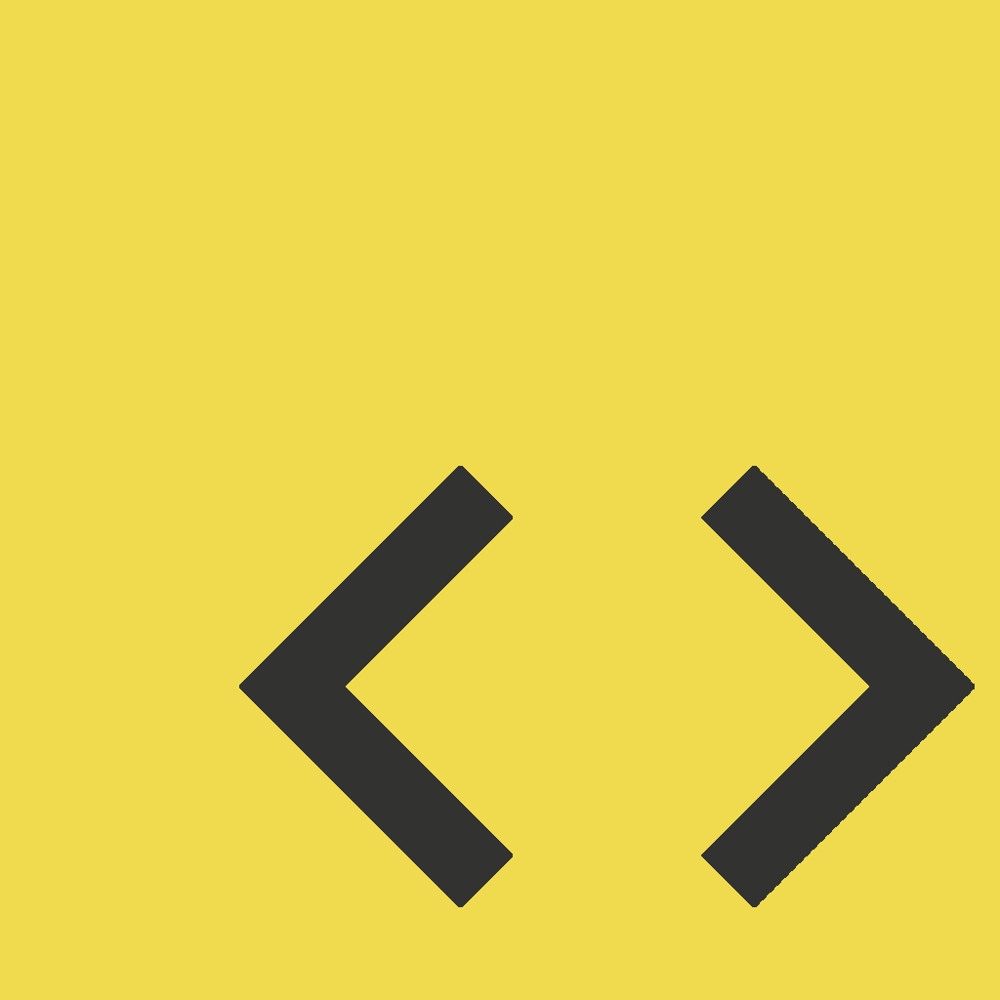
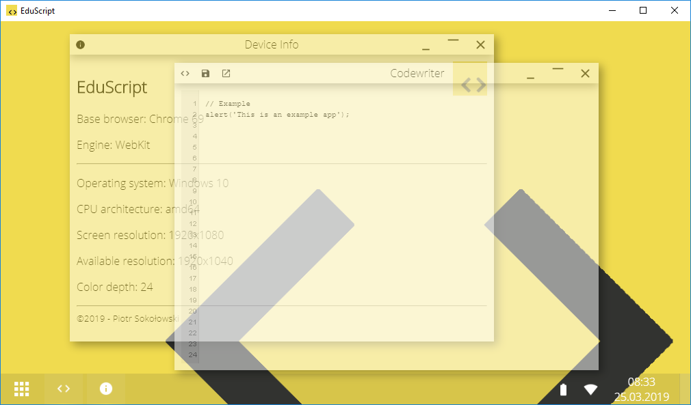
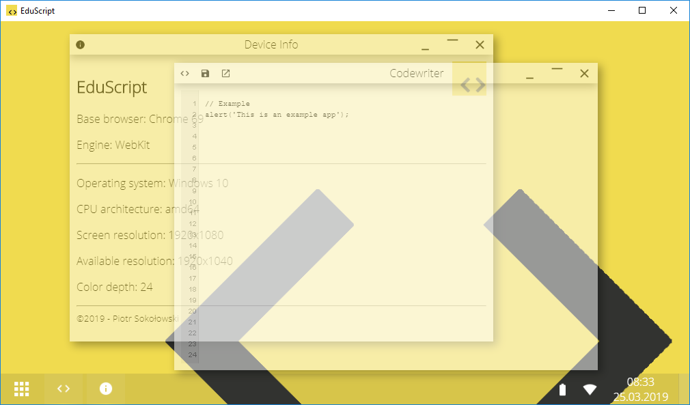

 EduScript
EduScript jest programem stworzonym z myślą o osobach rozpoczynających swoją przygodę z programowaniem. Został napisany w języku JavaScript i ten język jest również wykorzystywany do nauki w programie. Napisany kod można przetestować jednym kliknięciem, a wynik działania wyświetlany jest w okienku. Program został zaprojektowany tak, aby użytkownik bez problemu odnalazł potrzebne funkcje.
Tworzenie nowej aplikacji w EduScript nie powinno sprawiać większych problemów nawet osobom, które wcześniej nie programowały.
Interfejs użytkownika
Interfejs przypomina system operacyjny, a pisane skrypty są uruchamiane jako programy tego systemu. To sprawia, że całość jest spójna, a użytkownik nie musi wyrabiać sobie nowych nawyków.
Interfejs jest stylizowany na ten znany z Windows 10. Można tu znaleźć proste menu aplikacji, pasek uruchomionych aplikacji, ikony informujące o stanie urządzenia (poziom naładowania baterii oraz połączenie z internetem), a także obecną datę i godzinę. Aby łatwiej odnaleźć się wsród otwartych okien, można najechać na lewy dolny róg aplikacji, a okna staną się półprzezroczyste.
 

Pisanie skryptów
EduScript zawiera gotowe programy przeznaczone do tworzenia skryptów. Aplikacja Codewriter jest prostym notatnikiem, z poziomu którego można uruchomić skrypt oraz go zapisać, a Explorer pozwala na zarządzanie zapisanymi skryptami.
Aby tworzyć skrypty używające okien EduScript, należy skorzystać z predefiniowanych funkcji.

Aplikacja okienkowa to obiekt klasy App(), a składnia wygląda następująco:
var nazwa = new App(name, title, icon, style);Utworzony obiekt posiada następujące właściwości:
nazwa.name– nazwa aplikacji (wymagane),nazwa.title– tytuł wyświetlany na oknie (domyślnie „Okno”),nazwa.icon– ścieżka do ikony aplikacji,nazwa.content– zawartość okna (domyślnie pusta),nazwa.style– styl okna (domyślnie „classic”).
Oprócz właściwości, obiekt posiada także metody:
nazwa.functions()– funkcje definiowane przez użytkownika,nazwa.app()– stworzenie okna.
Użytkownik może też tworzyć własne właściwości i metody, które później wykorzysta w pracy skryptu, co jest bezpieczniejszym rozwiązaniem niż korzystanie ze zmiennych (może dojść do nadpisania zmiennych EduScript).
Struktura zawartości okna jest pisana za pomocą języka HTML, a styl w języku CSS. Pozwala to na stworzenie aplikacji o skalowalnym interfejsie.
Stylowanie okna
Domyślnym stylem okna jest classic, czyli zwykłe okno. Inne predefiniowane style to transparent i alert. Zamiast stylu można też wpisać kolor w formacie szestnastkowym (np. F0DB4F). Wtedy belka okna przyjmuje podany kolor. Styl okna definiuje się przy definiowaniu obiektu nowej aplikacji.
Funkcja newWindow() przyjmuje 5 parametrów i tworzy nowe okno z domyślną belką. Jej składnia wygląda następująco:
newWindow(name, icon, title, content, style);Wszystkie parametry tej funkcji są obowiązkowe. Funkcja wywołuje następujące polecenia:
- dołącza do obszaru roboczego nowy kontener klasy window o nazwie podanej w parametrze,
- czyni okno przeciągalnym (można umieścić okno w dowolnym miejscu przestrzeni roboczej,
- umożliwia zmianę rozmiaru okna.
Funkcja bar() przyjmuje 3 parametry i tworzy belkę okna. Sposób wywołania funkcji jest następujący:
bar(icon, title, style);
Wszystkie parametry tej funkcji są obowiązkowe. Funkcja zwraca kod HTML belki aplikacji. W ramach funkcji bar() wykonywana jest
funkcja stateButtons(), która nie przyjmuje parametrów i tworzy przyciski minimalizacji, maksymalizacji i zamykania okna.
Istnieje jednak możliwość samodzielnego stworzenia okna. Służą do tego funkcje bar() i newWindow(). W tym celu należy
przy definicji aplikacji zmodyfikować metodę app(), króra domyślnie tworzy standardowe okno.

newWindow()Obsługa błędów
Jeśli podczas próby wykonania skryptu program napotka błąd, użytkownik zostanie poinformowany stosownym komunikatem. Zazwyczaj jest to spowodowane błędnie wpisaną nazwą zmiennej lub instrukcji.
promp nie jest zdefiniowany
Może się też jednak zdarzyć, że poprawnie napisany kod nie będzie działał przez ograniczenia programu
O programie
EduScript jest aplikacją stworzoną w językach HTML, CSS (w tym jQuery UI) i JavaScript (jQuery), opakowaną w framework Electron wykorzystywany m.in. w takich programach jak Skype, GitHub Desktop, Discord, Visual Studio Code, Slack i Atom. Dzięki temu jest dostępny na platformach Windows, Linux i macOS.